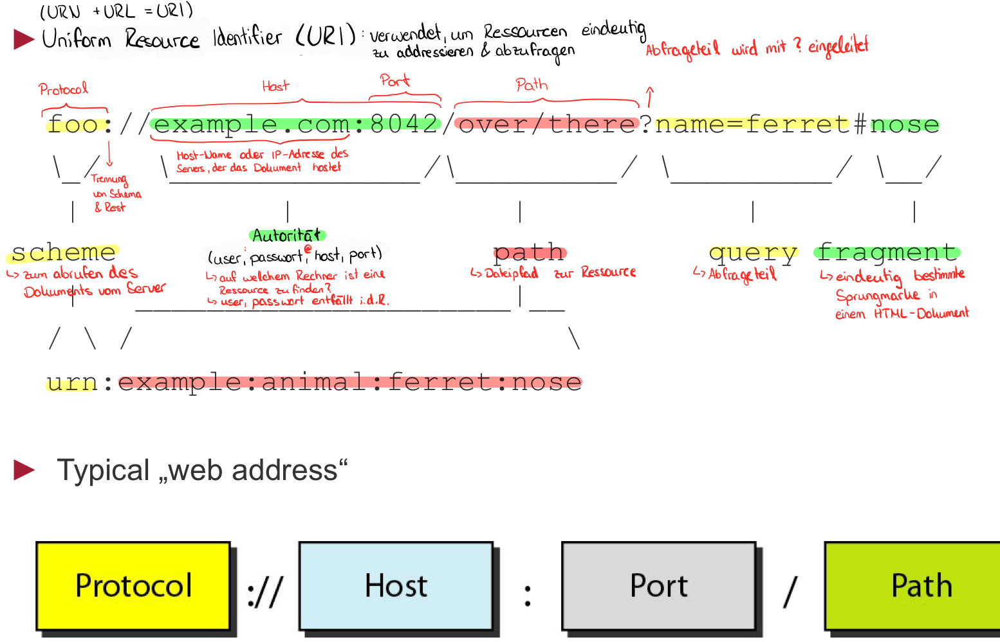

<div class="block">
  <div class="container site-border">
    <h2>Fehlercodes / Statuscodes / Antwortcodes</h2>
    <p>
      HTTP-Statuscodes sind standardisierte Codes, die von Webservern verwendet
      werden, um den Status einer HTTP-Anfrage anzuzeigen. Hier sind einige der
      häufigsten Fehlercodes:
    </p>
    <h3>1xx Informationen</h3>
    <p>
      Diese Codes zeigen an, dass die Anfrage empfangen wurde und der Prozess
      fortgesetzt wird.
    </p>
    <h3>2xx Erfolg</h3>
    <p>Diese Codes zeigen an, dass die Anfrage erfolgreich war.</p>
    <h3>3xx Umleitung</h3>
    <p>
      Diese Codes zeigen an, dass weitere Aktionen erforderlich sind, um die
      Anfrage abzuschließen.
    </p>
    <h3>4xx Client-Fehler</h3>
    <p>
      Diese Codes zeigen an, dass ein Fehler auf der Client-Seite aufgetreten
      ist.
    </p>
    <table>
      <thead>
        <tr>
          <th>Code</th>
          <th>Bedeutung</th>
          <th>Typische Ursachen</th>
          <th>Praxis-Lösung</th>
        </tr>
      </thead>
      <tbody>
        <tr>
          <td>400</td>
          <td>Bad Request</td>
          <td>Ungültige Anfrage, falsches JSON, fehlerhafte Parameter</td>
          <td>Request prüfen, Parameter validieren, richtige Headers senden</td>
        </tr>
        <tr>
          <td>401</td>
          <td>Unauthorized</td>
          <td>Fehlender API-Key / Token, nicht eingeloggt</td>
          <td>Login / Token korrekt setzen, OAuth prüfen</td>
        </tr>
        <tr>
          <td>403</td>
          <td>Forbidden</td>
          <td>Zugriff auf Ressource verweigert</td>
          <td>Berechtigungen prüfen, ACL / File-Settings anpassen</td>
        </tr>
        <tr>
          <td>404</td>
          <td>Not Found</td>
          <td>Falsche URL, Datei gelöscht, falscher Pfad</td>
          <td>
            Pfad/URL prüfen, Datei wiederherstellen, Rewrite-Rules kontrollieren
          </td>
        </tr>
        <tr>
          <td>405</td>
          <td>Method Not Allowed</td>
          <td>POST auf GET-Endpoint</td>
          <td>Methode anpassen, API-Dokumentation prüfen</td>
        </tr>
        <tr>
          <td>408</td>
          <td>Request Timeout</td>
          <td>Langsame Netzwerkverbindung</td>
          <td>Retry-Mechanismus implementieren, Server-Timeout prüfen</td>
        </tr>
      </tbody>
    </table>
    <h3>5xx Server-Fehler</h3>
    <p>
      Diese Codes zeigen an, dass ein Fehler auf der Server-Seite aufgetreten
      ist.
    </p>
    <table>
      <thead>
        <tr>
          <th>Code</th>
          <th>Bedeutung</th>
          <th>Typische Ursachen</th>
          <th>Praxis-Lösung</th>
        </tr>
      </thead>
      <tbody>
        <tr>
          <td>500</td>
          <td>Internal Server Error</td>
          <td>Bug im Servercode, Exception</td>
          <td>
            Serverlogs prüfen, Code debuggen, Fehlerhandling implementieren
          </td>
        </tr>
        <tr>
          <td>501</td>
          <td>Not Implemented</td>
          <td>API oder Server unterstützt die Methode nicht</td>
          <td>Server konfigurieren / Endpunkt implementieren</td>
        </tr>
        <tr>
          <td>502</td>
          <td>Bad Gateway</td>
          <td>Reverse Proxy erreicht Backend nicht</td>
          <td>Backend prüfen, Proxy-Konfiguration prüfen, Firewall</td>
        </tr>
        <tr>
          <td>503</td>
          <td>Service Unavailable</td>
          <td>Hohe Last, Wartungsmodus</td>
          <td>Load balancer, Wartung planen, Ressourcen erhöhen</td>
        </tr>
        <tr>
          <td>504</td>
          <td>Gateway Timeout</td>
          <td>Reverse Proxy wartet zu lange auf Backend</td>
          <td>Backend-Performance prüfen, Proxy-Timeout erhöhen</td>
        </tr>
        <tr>
          <td>505</td>
          <td>HTTP Version Not Supported</td>
          <td>Client sendet inkompatible HTTP-Version</td>
          <td>Client aktualisieren / Server konfigurieren</td>
        </tr>
      </tbody>
    </table>

    <h2>Web Client</h2>
    <p>Browser wie Chrome, Firefox, Safari, Edge, Opera</p>
    <h2>Browser</h2>
    <p>
      Sonderfall Lynx: besitzt SSH Verbindung, also sichere Verbindung auf
      entfernte Server. Barrierefrei für Menschen mit Sehstörungen, da der Text
      vorgelesen wird. Browser ist schneller, da er nur textbasiert ist ohne
      Grafiken.
    </p>
    <h2>URI und URL</h2>
    <h3>URI (Uniform Resource Identifier)</h3>
    <p>
      Eine URI ist eine Zeichenfolge, die eine Ressource identifiziert. Das kann
      zum Beispiel eine Webseite, eine Datei, ein E-Mail-Ziel oder ein anderer
      digitaler Inhalt sein. Eine URI kann zugleich angeben, wo die Ressource
      liegt und wie sie erreicht werden kann.
    </p>
    <figure>
      
      <figcaption>
        Die Bestandteile einer URI am Beispiel einer Webadresse.
      </figcaption>
    </figure>
    <p>
      Im Bild ist das Schema der Teil vor dem Doppelpunkt, zum Beispiel
      <code>https</code>. Es beschreibt, welche Art von Kennung beziehungsweise
      welches Zugriffsverfahren verwendet wird. Bei einer HTTP-URI folgt meist
      <code>//</code> und danach die Autorität: optional Benutzerinformationen,
      der Hostname oder die IP-Adresse und optional ein Port. Hinter dem Host
      kann ein Pfad die Ressource auf dem Server bezeichnen. Eine Query beginnt
      mit <code>?</code> und enthält zusätzliche Parameter. Ein Fragment nach
      <code>#</code> bezeichnet einen Abschnitt oder Teil innerhalb der
      Ressource und wird normalerweise vom Client ausgewertet, nicht an den
      Server gesendet.
    </p>
    <p>
      Beispiel:
      <code
        >https://www.example.com:443/dokumente/start.html?suche=uri#aufbau</code
      >. Darin ist <code>https</code> das Schema,
      <code>www.example.com</code> der Host, <code>443</code> der Port,
      <code>/dokumente/start.html</code> der Pfad, <code>suche=uri</code> die
      Query und <code>aufbau</code> das Fragment. Ein Standardport wie 443 kann
      in einer Webadresse weggelassen werden.
    </p>
    <p>
      Eine URL (Uniform Resource Locator) ist eine URI, die den Ort einer
      Ressource und üblicherweise den Weg zu ihrem Abruf beschreibt. Eine URN
      (Uniform Resource Name) ist dagegen eine URI, die eine Ressource über
      einen Namen oder eine Kennung bezeichnet, ohne zwingend ihren aktuellen
      Speicherort anzugeben. Deshalb gilt: Jede URL ist eine URI, aber nicht
      jede URI ist eine URL.
    </p>
    <h3>URL (Uniform Resource Locator)</h3>
    <p>
      URLs sind die gebräuchlichsten URIs im Web. Der Browser löst den Hostnamen
      über DNS in eine IP-Adresse auf und verbindet sich anschließend mit dem
      Server. Schema und Port bestimmen dabei, welches Protokoll verwendet wird;
      Pfad und Query geben an, welche Ressource beziehungsweise Variante davon
      angefragt wird.
    </p>

    <h2>Versenden von http Daten von Browser zu Webserver</h2>
    

    <h3>HTTP RTT (Round-Trip Time)</h3>
    <p>
      RTT bedeutet Round-Trip Time und bezeichnet die Zeit, die ein Signal vom
      Client zum Server und wieder zurück benötigt. Sie beschreibt damit die
      Netzwerklatenz eines Hin- und Rückwegs. Bei einer HTTP-Anfrage beeinflusst
      die RTT, wie lange es dauert, bis der Client eine Antwort erhält. Die
      komplette Dauer einer HTTP-Anfrage kann zusätzlich die Verarbeitung auf
      dem Server und die Übertragung der Antwort enthalten; sie ist daher nicht
      automatisch gleich der reinen Netzwerk-RTT. Bei einer neuen Verbindung
      können außerdem RTTs für den TCP- und bei HTTPS den TLS-Verbindungsaufbau
      hinzukommen.
    </p>

    <h3>HTTP-Request: Anfrage vom Client</h3>
    <figure>
      
      <figcaption>
        Die Zeilen einer HTTP-Anfrage vom Client an den Server.
      </figcaption>
    </figure>
    <ul>
      <li>
        <strong>Request-Zeile:</strong> Methode, angefragter Pfad und
        HTTP-Version, zum Beispiel <code>GET /seite HTTP/1.1</code>. Die Methode
        beschreibt die gewünschte Aktion.
      </li>
      <li>
        <strong>Header-Zeilen:</strong> Metadaten zur Anfrage, etwa der
        Ziel-Host, akzeptierte Inhaltstypen oder Informationen zum Client.
      </li>
      <li>
        <strong>Leerzeile:</strong> Trennt die Header vom Nachrichtenkörper.
      </li>
      <li>
        <strong>Body (optional):</strong> Enthält übertragene Daten, zum
        Beispiel Formularwerte bei einer <code>POST</code>-Anfrage. Bei
        <code>GET</code> ist normalerweise kein Body nötig.
      </li>
    </ul>

    <h3>HTTP-Response: Antwort des Servers</h3>
    <figure>
      
      <figcaption>
        Die Zeilen einer HTTP-Antwort vom Server an den Client.
      </figcaption>
    </figure>
	
    <ul>
      <li>
        <strong>Statuszeile:</strong> HTTP-Version, Statuscode und kurzer
        Statustext, zum Beispiel <code>HTTP/1.1 200 OK</code>. Der Statuscode
        zeigt, ob die Anfrage erfolgreich war oder wie sie behandelt wurde.
      </li>
      <li>
        <strong>Header-Zeilen:</strong> Metadaten zur Antwort, zum Beispiel
        Inhaltstyp, Inhalt-Länge oder Cache-Regeln.
      </li>
      <li>
        <strong>Leerzeile:</strong> Trennt die Header vom Nachrichtenkörper.
      </li>
      <li>
        <strong>Body (optional):</strong> Der zurückgegebene Inhalt, etwa HTML,
        JSON oder ein Bild. Bei manchen Antworten, zum Beispiel
        <code>204 No Content</code>, gibt es keinen Body.
      </li>
    </ul>

    <h2>Was bräuchte man um das WWW zu betreiben?</h2>
    <p>Um das WWW zu betreiben, benötigt man:</p>

    <ul>
      <li>Einen Webserver (z. B. Apache, Nginx)</li>
      <li>Auszeichnungssprache (HTML)</li>
      <li>Einen Webbrowser (z. B. Chrome, Firefox)</li>
      <li>Protokoll zwischen beiden (z. B. HTTP, HTTPS)</li>
    </ul>

    <h2>Zusammenspiel Server und Browser</h2>
    <p>
      Wenn du eine Website veröffentlichst, liegen Dateien wie index.html,
      style.css, script.js, Bilder und Fonts auf einem Webserver (z.B. Apache,
      nginx) zB unter /meine-seite/. Wenn jemand im Browser diese URL eingibt,
      schickt der Browser eine Anfrage an den Server und der Server schickt die
      HTML Datei zurück. css, js und Bilder werden ebenso vom Server geladen.
      Der Browser baut dann das DOM (HTML), rendert das Layout (CSS) und führt
      den Code aus (JS).
    </p>
    <h3>Aufgabenverteilung zwischen Webserver und Webclient</h3>
    <p>
      Der Server stellt für viele Clients Daten zum Abruf bereit. Der Webclient
      ruft Daten von einem Server ab und kümmert sich um deren Verarbeitung zB
      die Darstellung einer Website.
    </p>
    <p>
      Zur Test Entwicklung ruft man die Seite immer über den localhost auf. Das
      ist ein Server direkt auf dem eigenen Gerät auf der IP 127.0.0.1
    </p>
    <h3>Kommunikation im Web / Kommunikation zwischen Client und Server</h3>
    

    <h3>Browser / Webserver Kommunikation / Seitenaufruf</h3>
    

    <h2>Clientseitige vs Serverseitige Programmierung</h2>

    <h3>Clientseitige Programmierung</h3>
	
	<p>Webprogramme können auf dem Client oder dem Server ausgeführt werden. Mischformen davon wären AJAX und WebSockets.</p>
    <p>
      Clientseitiger Code (JS) wird im Browser ausgeführt. Er wird verwendet, um
      die Seite (über das DOM) zu manipulieren oder andere Operationen
      auszuführen, die keine serverseitigen Ressourcen benötigen.
    </p>
    <p>
      Vorteile sind die direkte Interaktion mit dem User, da kein Request an
      Server erfolgt zB Maus Effekte. Keine Netzbelastung durch nicht gebrauchte
      API-Calls und keine Serverabfragen, somit schnellere Response. Das spart
      Bandbreite und Serverkosten. Es wird nur der Browser und das Gerät
      beansprucht, nicht der Server. Das ermöglicht mehr Performance durch die
      Nutzung der Client CPU
    </p>
    <p>
      Nachteile wären: Es ist keine DB Aktion möglich. Alles, was
      sicherheitskritisch ist, muss serverseitig passieren. Also Logins,
      Passwörter. Es herrscht immer Gefahr für den Client durch Code
      Manipulierung. Es gibt immer unterschiedliche Ergebnisse auf
      unterschiedlichen Geräten, Browsern, Performance. Bei älteren Geräten evtl
      ruckelige Animation. Alte Browser lassen Features nicht funktionieren. Bei
      unterschiedlichen Bildschirmgrößen ist das Layout anders. Alles was im
      Frontend läuft ist sichtbar durch die Devtools (Geschäftslogik kann
      geleakt werden). API Keys müssen geschützt werden. Keine sensiblen
      Berechnungen im Frontend.
    </p>
    <p>
      Verwendung für GSAP Animationen, Hover Effekte, statische Websites bzw
      Text, Bilder, Animationen.
    </p>
    <p>
      Client ist also schnell, interaktiv, dafür aber unsicher, hat keine DB und
      sichtbar.
    </p>

    <h3>Serverseitige Programmierung</h3>
    <p>
      Serverseitiger Code (PHP) wird auf dem Server ausgeführt. Er wird
      verwendet, um Daten in von Benutzern übermittelten Formularen zu
      verarbeiten, Daten aus Datenbanken oder anderen Dateien abzurufen oder zu
      aktualisieren, mit anderen Arten von Softwarekomponenten zu kommunizieren,
      die auf dem Server installiert sind und clientseitige Ausgaben dynamisch
      zu erstellen.
    </p>
    <p>
      Webbrowser kommunizieren mit Webservern über HTTP (Klick auf einen Link,
      absenden von Formularen). Die Anfrage enthält eine URL, die die Ressource
      identifiziert, eine Methode, die die Aktion definiert und zusätzliche
      Informationen, die als URL Parameter in Form eines Query Strings gesendet
      werden (?title=Query_string&action=edit).<br />
      Webserver warten auf diese Anfrage, verarbeiten diese und antworten per
      HTTP Response. Die Response enthält eine Statuszeile, die angibt, ob die
      Anfrage erfolgreich war (zB. HTTP/1.1 200 OK).
    </p>
    <p>
      Usecase immer dann, wenn User angelegt werden müssen, Bestellungen,
      Profile, Login, Zahlungsdaten,
    </p>
    <p>
      Server ist dagegen langsam, dafür aber stabil, sicher, DB ist möglich und
      verborgen
    </p>

    <p>
      Vorteile sind: zentrale Kontrolle, da der Code auf dem Server läuft und
      der User ihn nicht manipulieren kann. Ebenso direkte Datenbankanbindung,
      es herrscht direkter Zugriff auf DB, die Daten können gespeichert,
      geändert und abgefragt werden. Sicherheit, da kein Zugriff durch den
      Client. Server rendert HTML und schickt es an den Browser, der Client muss
      wenig rendern.
    </p>
    <p>
      Nachteile: Viele Nutzer teilen sich Server Ressourcen. Zudem benötigt jede
      Aktion einen Request an Server, somit Netzwerkabhängig. Höhere
      Serverkosten.
    </p>

    <h3>CGI - Common Gateway Interface</h3>
    <p>
      Eine der ersten Methoden, um Webserver mit Programmen zu verbinden. Dabei
      kam ein Request rein, der Server startete ein externes Programm, Programm
      erzeugte HTML und schickte es an Server zurück.
    </p>
    <p>
      Heute ineffizient. Für jede Anfrage wird ein neuer Prozess gestartet.
      Wurde ersetzt durch PHP, Node.js, Python, FastCGI.
    </p>

    <h3>W3C - World Wide Web Consortium</h3>
    <p>
      Schafft einheitliche Standards für das Web. Kompatibilität zwischen
      Browsern, Geräten und Plattformen sichern. Gründung 1994 durch Tim
      Berners-Lee
    </p>
    <p>
      HTML, CSS, SVG, ARIA, Barrierefreiheit, Interoperabilität (Browser und
      Geräte sollen Inhalte gleich darstellen), Sicherheit (Empfehlungen zu
      HTTPS, Cookies, Datenschutz).
    </p>

    <h3>Device Pixel Ratio</h3>
    <p>
      Beschreibt das Verhältnis zwischen CSS Pixeln und physischen Pixeln (echte
      Display Pixel). DPR = physische Pixel / CSS Pixel.
    </p>
    <p>
      DPR 1 (1 CSS Pixel = 1 echter Pixel). Normale Laptops bewegen sich
      zwischen 1 - 1.5. Sehr scharfe Retina Displays bei Smartphones sind bei
      DPR 2-3
    </p>
    <h3>Mobile / Desktop Modus in Chrome Devtools</h3>
    <p>
      Legt Geräteverhalten fest. Bei Mobile wird Touch statt Maus verwendet,
      also Klick wird zu Tap. Hover Effekte funktionieren anders. touchstart und
      touchend sind aktiv. Anderes Scrollverhalten und der User Agent denkt sich
      (ich bin ein smartphone).
    </p>
    <h3>Throttling Begrenzung</h3>
    <p>
      Hier wird die Download/Upload Geschwindigkeit gedrosselt. Ebenso die Ping
      Latenz. Auch die CPU rendert unterschiedlich, somit ist die JS Ausführung
      unterschiedlich.
    </p>
    <p>
      No throttling: Keine Drosselung. Also echte Geschwindigkeit deines PCs.
      Default für das entwickeln.
    </p>
    <p>
      Low Tier Mobile: schwaches älteres Smartphone mit langsamer CPU,
      schlechtem Netzwerk.
    </p>
    <p>
      Mid Tier Mobile: durchschnittliches Smartphone schwächere CPU, langsameres
      Internet.
    </p>
    <p>Offline: Kein Internet</p>
    <h2>HTTP-Methoden GET und POST</h2>

    <h3>GET-Methode</h3>
    <p>
      Mit der GET-Methode werden Daten vom Server angefordert. Parameter können
      dabei in der URL übergeben werden. Ein <code>?</code> leitet die
      Query-Parameter ein, ein <code>&amp;</code> trennt mehrere Parameter und
      ein <code>=</code> trennt den Parameternamen vom Wert.
    </p>
    <p>
      Beispiel:
      <code>https://example.com/suche?name=Max&amp;alter=25</code>
    </p>
    <p>
      Der Browser macht daraus dann GET /suche?name=Max&alter=25 HTTP/1.1 Host:
      example.com
    </p>
    <p>Eine mögliche Response könnte so aussehen:</p>
    <pre>
HTTP/1.1 200 OK
Date: Mon, 31 Aug 2026 18:30:00 GMT
Server: nginx
Set-Cookie: sessionId=abc123
Via: 1.1 proxy.example
Connection: keep-alive

und hier html content ...
</pre
    >
    <p>
      Sensible Daten wie Passwörter sollten nicht per GET übertragen werden, da
      die URL beispielsweise im Browserverlauf, in Logs oder als Lesezeichen
      sichtbar sein kann.
    </p>

    <h3>POST-Methode</h3>
    <p>
      Mit der POST-Methode werden Daten im HTTP-Request-Body an den Server
      übertragen. Sie wird beispielsweise zum Absenden von Formularen, zum
      Erstellen neuer Ressourcen und zum Übertragen größerer Datenmengen
      verwendet.
    </p>
    <p>
      Die Daten sind dadurch nicht in der URL sichtbar. Das bedeutet jedoch
      <strong>nicht automatisch, dass sie sicher übertragen werden</strong>. Für
      die sichere Übertragung sensibler Daten wird HTTPS benötigt.
    </p>

    <h3>HEAD-Methode</h3>
    <p>
      Die HEAD-Methode funktioniert ähnlich wie GET, der Server liefert jedoch
      nur die HTTP-Header und keinen Response-Body zurück. Sie kann
      beispielsweise verwendet werden, um Informationen über eine Ressource zu
      erhalten, ohne deren Inhalt herunterzuladen.
    </p>

    <h3>PUT-Methode</h3>
    <p>
      Mit PUT wird eine Ressource auf dem Server erstellt oder vollständig
      aktualisiert. PUT wird häufig verwendet, um eine vorhandene Ressource
      durch eine neue Version zu ersetzen.
    </p>

    <h3>TRACE-Methode</h3>
    <p>
      Mit TRACE kann der Client überprüfen, wie eine Anfrage durch Proxy-Server
      oder andere Zwischenstationen verarbeitet wird. Durch welche
      Zwischenstationen eine Anfrage läuft. Der Server gibt dabei die empfangene
      Anfrage unverändert zurück. Aus Sicherheitsgründen wird TRACE häufig
      deaktiviert.
    </p>

    <h3>DELETE-Methode</h3>
    <p>Mit DELETE wird eine Ressource auf dem Server gelöscht.</p>

    <h3>OPTIONS-Methode</h3>
    <p>
      Mit OPTIONS kann ein Client abfragen, welche HTTP-Methoden oder
      Kommunikationsmöglichkeiten für eine Ressource bzw. einen Server
      unterstützt werden. OPTIONS spielt beispielsweise bei CORS eine wichtige
      Rolle.
    </p>

    <h3>CONNECT-Methode</h3>
    <p>
      Mit CONNECT wird über einen Proxy ein Tunnel zu einem Zielserver
      aufgebaut. Die Methode wird beispielsweise verwendet, um
      HTTPS-Verbindungen über einen HTTP-Proxy zu ermöglichen. Verschlüsselte
      Daten können dann durch den Tunnel weitergeleitet werden.
    </p>

    <h2>Webservice / Webdienst</h2>
    <p>
      Ein Webservice ist eine Schnittstelle, über die Programme über ein
      Netzwerk miteinander kommunizieren und Daten oder Funktionen austauschen.
      zB eine Wetterapp, die die Informationen von einem Webservice anfragt,
      erhält und dann anzeigt. Oder eine Websiten Suche, die Daten bei einem
      Webservice anfragt, bekommt und anzeigt.
    </p>
  </div>
</div>
